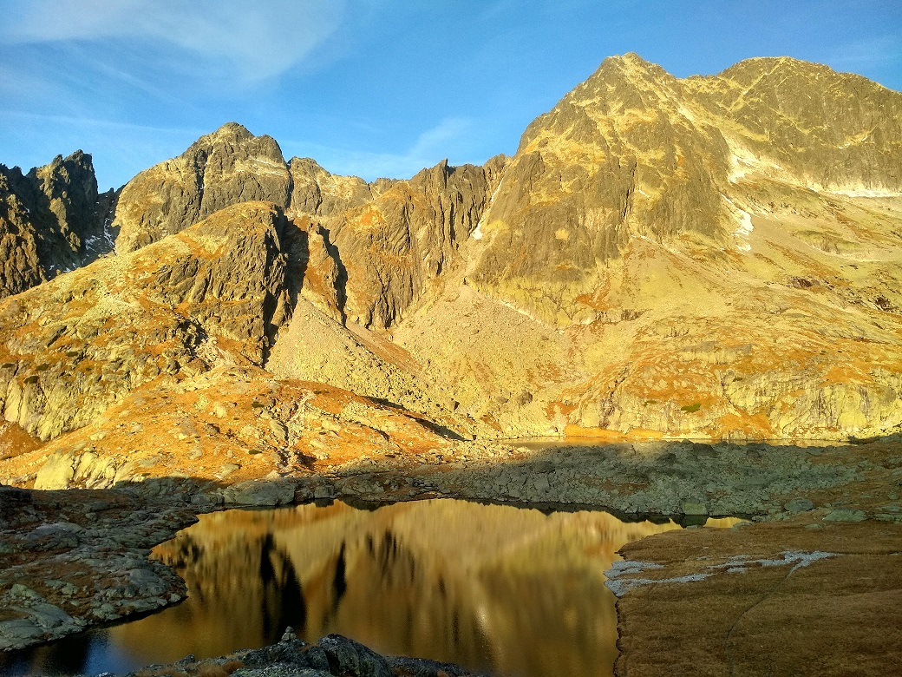

Malá studená dolina
O dolinì
Malá Studená dolina je terasovité údolí nacházející se ve slovenské èásti Vysokıch Tater. Jeho délka èiní pøiblinì 4,5 km. Z vıchodní strany je ohranièeno Lomnickım sedlem a ze západu Prostøedním høebenem, kterı ho oddìluje od Velké Studené doliny. V jeho závìru se nachází Kotlina Pìti Spišskıch ples, kterou ohranièuje masiv Ladového štítu (2627 m). Údolí protíná Malı Studenı potok.
¼adovı štít (2627 m)
¼adovı štít, 2627 m, je tretí najvyšší štít Vysokıch Tatier. Nachádza sa v hlavnom hrebeni a tvorí záver Malej Studenej doliny. Na vıchode hranièí so Zadnım ¼adovım štítom, od ktorého ho odde¾uje ¼adová priehyba a na západe s Malım ¼adovım štítom. Severné zrázy spadajú do Javorovej doliny patria k najmohutnejším vo Vysokıch Tatrách, JV stena spadajúca do Kotliny Piatich Spišskıch plies ma asi 250 metrov. Medzi najpopulárnejšie i najviac lezené cesty v tejto stene patrí Brnèalov pilier. Pravú èas steny, ktorá a do roku 1968 zívala prázdnotou, objavili pre horolezcov Kriššák s Farkašom. Odvtedy pribudlo v tejto èasti steny 13 novıch ciest a variantov.